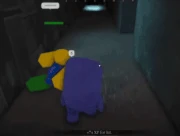
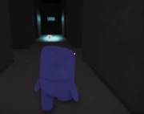

Fuwatti(Also referred to as Blockman Oni or Fuwatty). initially teased June 3rd, 2024, and officially added on September 4th, 2024, is the fourteenth monster in Pillar Chase 2. It is one of the many mutant variants of Ao Oni found within the various Ao Oni[1]-infested location, being the secondary threat and mascot of the Ao Oni series. It can be unlocked for 1000 coins in the shop. (Previously 1350 before the Black Friday Event's conclusion). Fuwatti also has his own starring gamemode, Watti-O-Clock, where a lone Fuwatti must turn the survivors into fellow wattis..
|  When pressing 1 Fuwatti charges extremely fast in a straight line until hitting a wall or player. Upon hitting a player, it will deal 85 damage to them which will bone break a survivor in one hit. When hitting a wall, Fuwatti will fall backwards and be stunned for a moment, regaining 25 stamina. Fuwatti will slow down with very short endlag if the move never succeeds/hits a wall. Has a 4 second cooldown. |
 When pressing 2 Fuwatti will raise his hands to his head and highlight all players on the map for a medium duration and regains some stamina. It is unable to attack for the duration of this ability. Has a 17 second cooldown. This ability is shared with Ao Oni. |